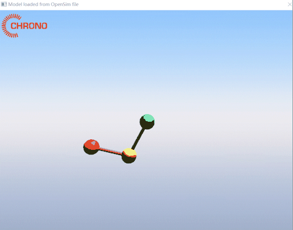
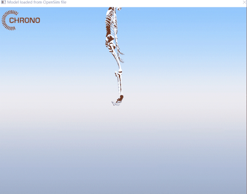

基于 Chrono 的肌肉骨骼解析和控制
预备知识：行人物理场模式 、 解析器的理论介绍 、源代码编译 。
运行 demo_PARSER_OpenSim.cpp 后的效果：

运行指定 osim 文件
在 Visual Studio 2022 中输入参数并运行你的程序，可以按照以下步骤操作：
- 在 Visual Studio 解决方案资源管理器中右键单击项目
demo_PARSER_OpenSim，然后选择“属性”。 - 在“属性”窗口中，选择“调试”选项卡。
- 在“命令参数”文本框中输入你想要传递给程序的参数，比如
-f opensim/double_pendulum.osim。 - 点击“确定”按钮保存更改，按Ctrl+F5继续运行。
目前支持的模型列表位于 chrono/data/opensim ，有些模型运行需要添加额外参数：
# 添加 -c true 启用碰撞才会有牛顿摆对撞的效果
demo_PARSER_OpenSim.exe -f opensim/newton_cradle.osim -c true
# 骨骼模型需要添加 -r true 启用渲染可视化网格才能有骨骼效果
demo_PARSER_OpenSim.exe -f opensim/Rajagopal2015.osim -r true -c true

增加地面
参考 demo_VEH_RigidTerrain_WheeledVehicle 中的刚体地形来测试人的站立。
刚体地面上的车子示例可以按WASD进行控制。
高机动性、多用途、轮式(非履带式)车辆，简称HMMWV(HighMobility Multi-purpose Wheeled Vehicle)，（简称悍马），外文名HMMWV或Humvee。
其他
车辆在使用土壤接触模型的可变性地面上拐弯运动 demo_VEH_SCMTerrain_WheeledVehicle。